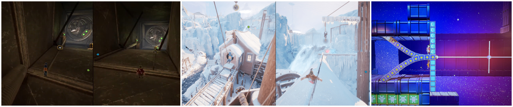
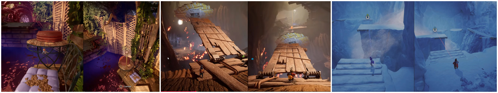
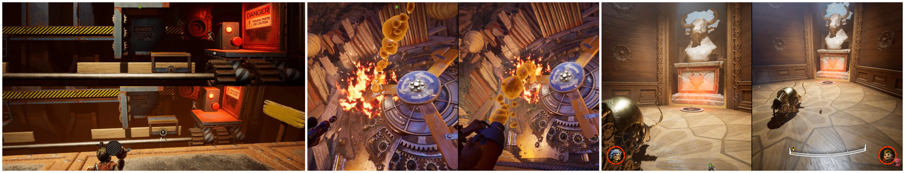

What’s Actually Going On Under the Hood
When you play It Takes Two, it feels like every level is doing something completely new. New mechanics, new environments, new ideas every few minutes.
But if you slow down and actually look at the structure, something interesting shows up:
The game is not constantly inventing new level designs.
It’s reusing the same modular building blocks, just swapping mechanics and presentation.
This post breaks that down clearly—so you can see it, validate it yourself, and use it in your own level design.
The Core Idea
Think of the game like LEGO.
- The shape of the blocks stays the same
- The color and function change
So instead of designing hundreds of unique levels, the game uses:
- A small set of spatial modules
- Combined with different mechanics per world
The Core Modules (What Actually Repeats)
These are the patterns you’ll see again and again across the entire game.
1. Dual Lane Sync (Two Players, Parallel Paths)
What it is:
Both players move forward on separate but connected paths, then regroup.
Why it exists:
Teaches coordination without overwhelming complexity.
Where to find it:
- The Shed (early traversal after vacuum section)
- Snow Globe (grind rails intro)
- Rose’s Room (pillow fort sections)

2. Staggered Gap Chain (Not in Sync)
What it is:
A platforming section where both players traverse similar paths, but the platforms are intentionally
offset so they cannot move in perfect sync.
Why it works:
It forces communication and awareness between players instead of letting them mirror each other.
Even simple jumps become coordinated decisions.
Where to find it:
- The Tree (before wasp combat)
- Garden (vine traversal)
- Snow Globe (floating ice platforms)

3. Ability Gate (The Backbone)
What it is:
A blocked path that can only be opened using the current level-specific ability. The gameplay flow
is always: encounter obstacle → use mechanic → unlock progression.
Why it works:
It cleanly teaches and tests new mechanics while controlling pacing. Every new ability becomes both
a tool and a key.
Where to find it:
- Nails in The Shed
- Sap + fire in The Tree
- Time rewind in Clockwork
- Plants in Garden

4. Chained Interaction Run
What it is:
A traversal sequence where players must move while actively using abilities at the same time,
instead of stopping to solve puzzles separately.
Why it matters:
It creates flow. Movement and interaction become one continuous system instead of alternating
gameplay modes.
Where to find it:
- Tree sap while platforming
- Clockwork rewind while moving
- Garden grapple + movement chains
5. Cooperative Boost / Launch
What it is:
One player directly propels, activates, or positions the other player forward using an ability or
environmental interaction.
Why it matters:
It creates strong co-op dependency — progress literally cannot happen without coordination.
Where to find it:
- Rose’s Room (toys)
- Garden (plants)
- Snow Globe (boost sections)
6. Rotational Path (Moving World)
What it is:
The environment itself moves or rotates, changing platform alignment and forcing players to adapt in
real time.
Why it matters:
It turns the level into a dynamic system rather than a static space, increasing tension and spatial
awareness.
Where to find it:
- Clockwork gears
- Space sections
- Snow Globe rotating elements
7. Chase Corridor (Pure Pressure)
What it is:
A linear escape sequence where players must keep moving forward while being chased or pressured by a
hazard.
Why it matters:
It creates urgency and removes hesitation — the focus is pure reaction and coordination under
pressure.
Where to find it:
- Vacuum escape
- Wasp chase
- Bull chase
- Avalanche sequence
8. Vertical Co-Op Climb
What it is:
A vertically structured section where players ascend (or descend) using coordinated actions across
multiple layers of the environment.
Why it matters:
It adds scale and reinforces cooperation through elevation-based dependency.
Where to find it:
- Garden plants
- Clockwork ascent
9. Split-Screen Divergence
What it is:
Both players are physically separated into different spaces with different challenges happening at
the same time.
Why it matters:
It creates asymmetry — players must communicate because they are no longer solving the same problem.
Where to find it:
- Rose’s Room
- Clockwork
- Space Station
10. Setpiece Rail System
What it is:
A controlled cinematic traversal where players move along a guided path while interacting with
scripted environmental events.
Why it matters:
It delivers spectacle and pacing control while still keeping players lightly engaged.
Where to find it:
- Frog ride
- Spider ride
- Flying sequences
The Big Realization: It’s All Reuse
Now here’s the important part.
These are not one-off ideas.
They are reused continuously across different worlds.
- Swinging → nails vs plants
- Platforms → ice vs gears
- Triggers → sap vs time rewind
- Chases → vacuum vs bull vs avalanche
How Levels Are Actually Built
Intro → Teach → Test → Twist → Combine → Setpiece → Cooldown
What that looks like:
- Start simple
- Introduce mechanic
- Let players try it
- Change the rules
- Combine everything
- Big cinematic moment
- Calm exit
Why This Matters
How do you make a game feel constantly fresh without burning production time?
- Reuse structure
- Swap mechanics
- Reskin environment
Final Takeaway
It Takes Two doesn’t succeed because it has infinite ideas.
It succeeds because it has a tight reusable level grammar layered with new mechanics.